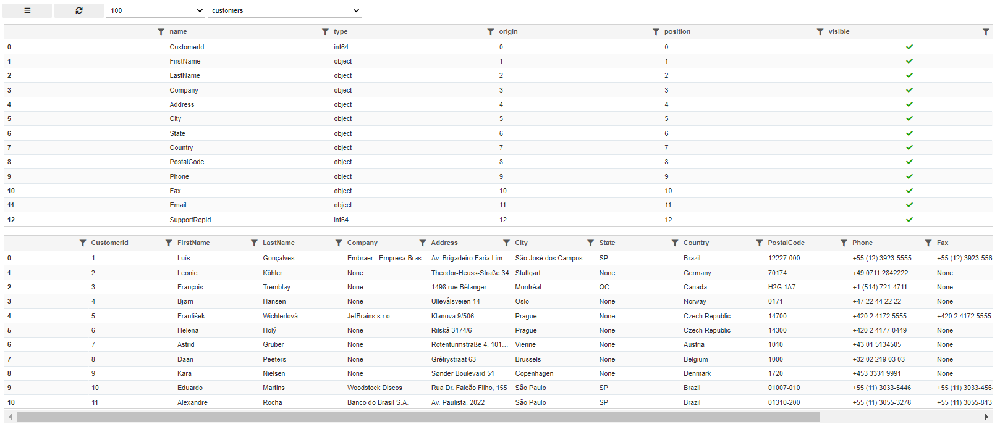

User Interface
User Interface with database scan enabled¶
Setup¶
Libraries
import sqlgrid
from sqlgrid.sqlData import sqlData
import ipywidgets as widgets
Database connection string
databasePath = "sqlite:///./chinook.db"
Grid options
grid_options = {
# SlickGrid options
'fullWidthRows': False,
'syncColumnCellResize': True,
'forceFitColumns': True,
'defaultColumnWidth': 150,
'rowHeight': 28,
'enableColumnReorder': True,
'enableTextSelectionOnCells': True,
'editable': True,
'autoEdit': False,
'explicitInitialization': True,
'enableCellNavigation': True,
# Qgrid options
'maxVisibleRows': 10,
'minVisibleRows': 8,
'sortable': True,
'filterable': True,
'highlightSelectedCell': True,
'highlightSelectedRow': True
}
Output Widget (debug information for sqldata proxy)
out = widgets.Output(layout=widgets.Layout(border='1px solid black'))
Database proxy object
sql1 = sqlData(path=databasePath, out=out)
Grid database Browser
grid1 = sqlgrid.gridctl(sql1, grid_options=grid_options, tableScan=True )
"Initial" User Interface¶
The python grid1._gridctl object display the status line with four widgets left to right:
- The triple bar button
- The reload button
- The "data table width" dropdown
- The "database table" dropdown

To select a table, click on the corresponding dropdown and select a new item. If you want to see the first table, you need to select another one and then go back to the first one. Then the "New Table Select" user Interface shows-up
"New Table Selected" User Interface¶
Two grids are showing-up below the Initial user interface
- 1st grid is the table column definition a.k.a the "column" grid
- 2nd grid the first rows of the selected table with at most the 1st 25 columns displayed a.k.a the "data" grid

Show/Hide the "column" grid¶
Use the triple bar button:
- if "column" grid is diplayed, it get hidden
- else it get displayed
Show/Hide columns in the "data" grid¶
The "column" grid is controlling the "data" grid. The user can show/hide columns editing the visible field of any column: double click in the corresponding cell. Then click on the check box. When the check box is set, the colomn is diplayed else it is hidden. Initially, the first 25 column are displayed
Change column order¶
To change the column order, for a selected column, click and hold the left mouse button and then drag the column heading to its new location, drop it there.
The position column of the "column grid" is adjusted accordingly.
Change the "data" grid width¶
Using the 1st dropdown, the user can select the "data" grid horizontal width.